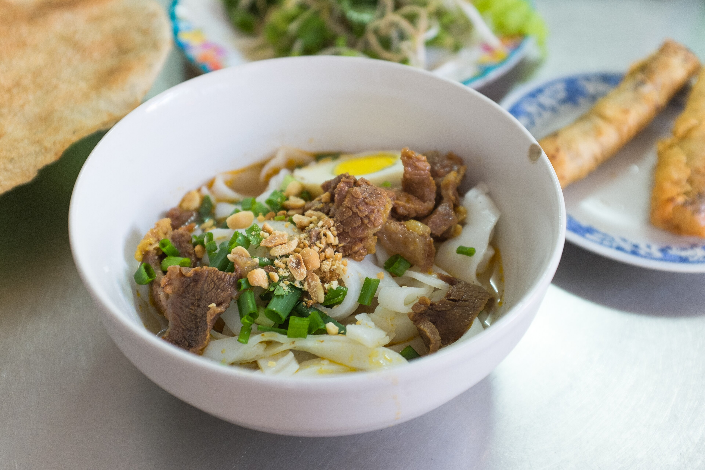

Across regional flavors,
remember a meal.
Some dishes bring back a city. Some flavors bring us home. Begin this journey with a warm bowl of pho.
Read the story of pho →Some dishes bring back a city. Some flavors bring us home. Begin this journey with a warm bowl of pho.
Read the story of pho →
Noodles, fresh herbs, and rice crackers. Each ingredient adds a different texture to the bowl.
Explore the dish →“One dish,
many memories.”